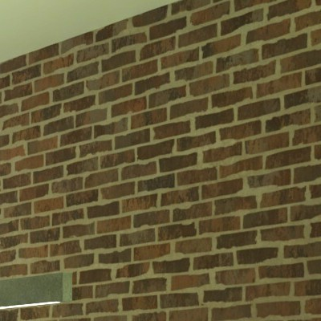
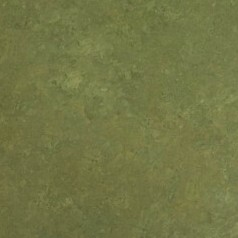

Amanda
Lofera to moja pracownia architektury wnętrz. Projektuję domy i mieszkania w województwie łódzkim.


Nie boję się trudnych wnętrz. Mieszkanie z sufitem na pięć metrów i antresolą też da się urządzić ładnie i funkcjonalnie.
W wysokim pomieszczeniu dobieram skalę mebli i lamp, żeby było przytulnie. W małym mieszkaniu szukam miejsca na wszystko, co trzeba schować, bez odbierania światła.
Każdy projekt pokazuję na wizualizacjach 3D. Kolory, meble i światło oglądasz z kilku stron, zanim kupisz pierwszą płytkę.
Amandaprojektantka wnętrz, Lofera
Materiały
Ciepło, które się nie nudzi
W moich projektach wracają te same, naturalne materiały: cegła, drewno, len i stonowane zielenie. Próbki obok to wycinki z wizualizacji, nie zdjęcia z katalogu.




„Mogę polecić z czystym sumieniem! Odpowiednia osoba na odpowiednim miejscu. Potrafi słuchać potrzeb klienta i idealnie wpasowuje się w jego gust. Dzięki ogromnej wyobraźni potrafi zwizualizować najbardziej zwariowany pomysł!”
„Skorzystałem z usług podczas remontu mieszkania z wysokim sufitem (5m) i antresolą. Wydawało mi się, że nie da się tego zrobić ładnie, ale jednak się dało i ładnie, i funkcjonalnie. Dziękuję za pomoc!”
Współpraca
Porozmawiajmy o Twoim wnętrzu.
+48 608 846 949- Godzinypon.–pt. 9:00–16:00
- Obszarwojewództwo łódzkie
- Na startmetraż, rzut albo zdjęcia